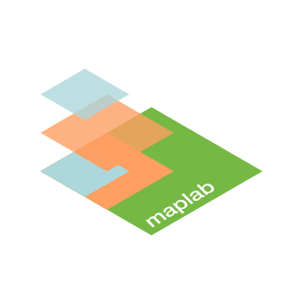

maplab
Please switch to landscape mode
for a better
User Experience

m
a
p
l
a
b
Das Labor für
der FK08
Kartographie & Kommunikation
>
Besuch uns auf
>
Stöber durch studentische Projekte
urlurlurl
>
Oder informier dich über unseren
Studiengang